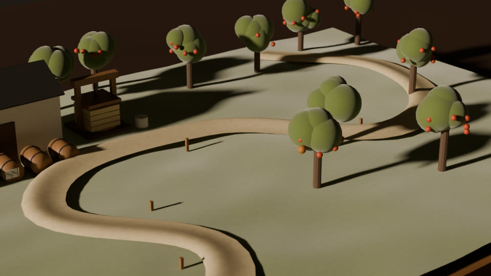
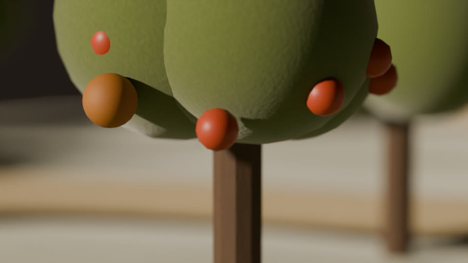
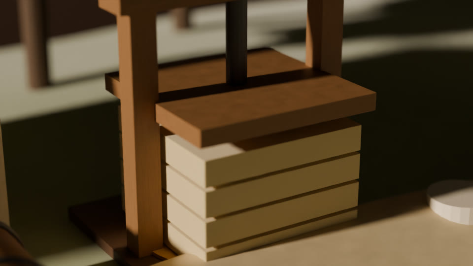
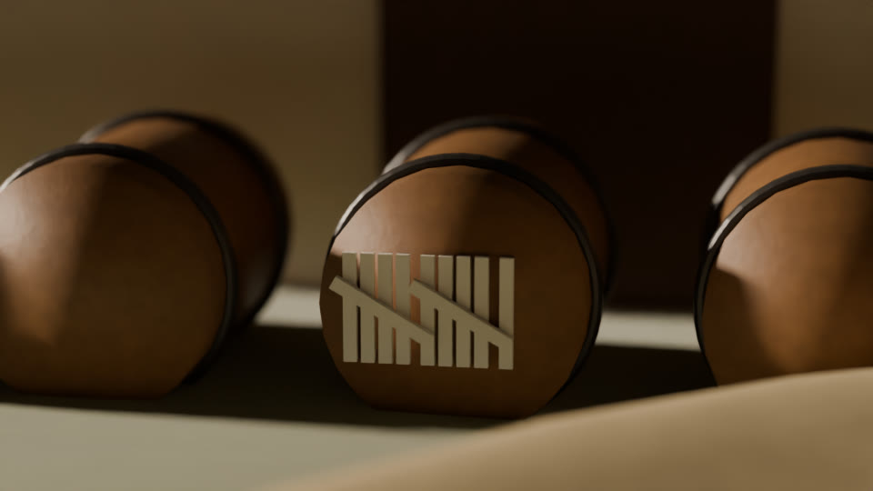
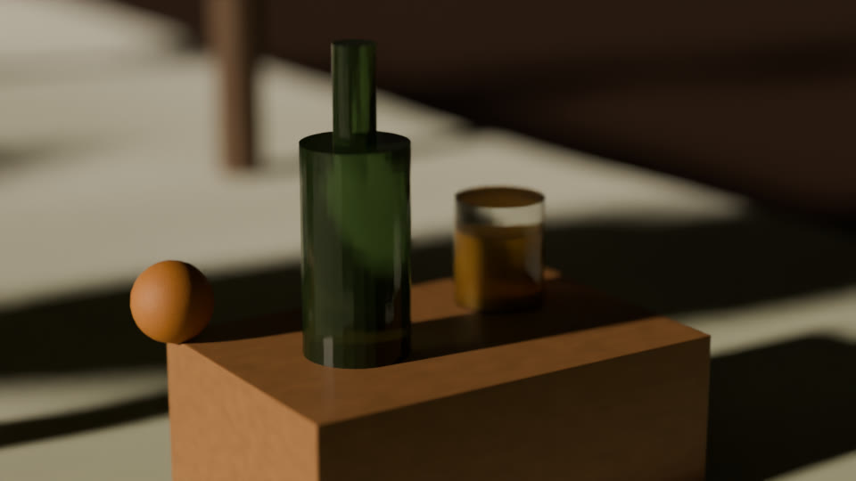

Somerset cider
The long way round, on purpose.
Dry Somerset cider, pressed in autumn and poured the following spring.
Join the spring list
Autumn
We pick by hand.
From fourteen old trees on one lane: Kingston Black, Dabinett and Yarlington Mill.

October
We press by weight.
Milled apples are built into straw cheeses and pressed slowly in a wooden press.

November to September
We wait eleven months.
Wild yeast ferments the juice, then it rests in old oak until the next autumn. The chalk on the barrel is the only clock we keep.

Spring
Then we pour.
Bottle-conditioned and bone dry. About 4,000 bottles a year, and no more.
Twelve bottles, once a year. A case of twelve 750 ml bottles is £84, delivered in Great Britain each spring.
Plainly: the list is first come, first served. If we sell out, you are first in line the following spring, and you pay nothing until your case is ready.